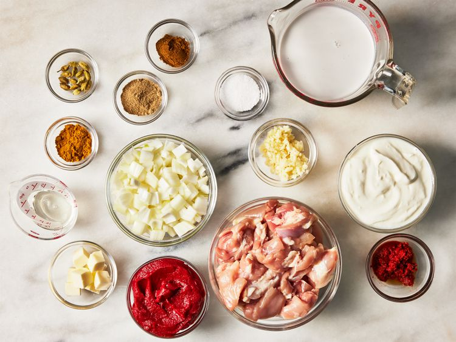
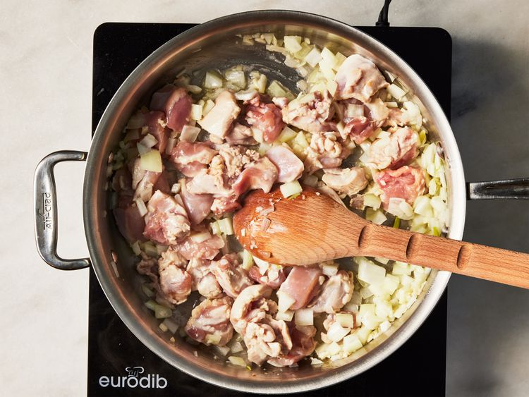
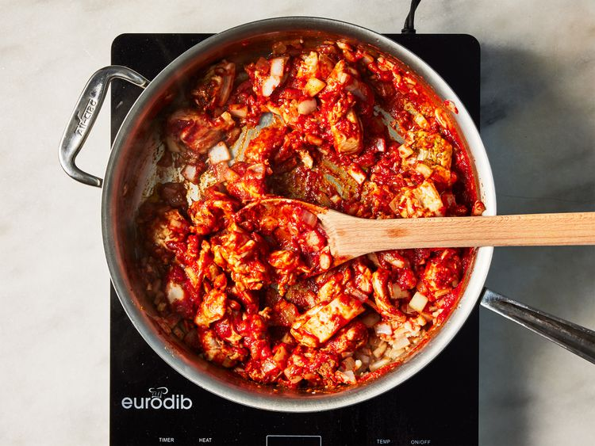
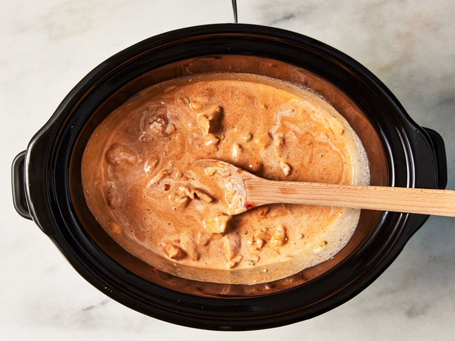

Back
Slow Cooker Butter Chicken

Description
It's easy to prep this butter chicken in the slow cooker in the morning to
come home to the wonderful aroma of warm Indian spices... I love it and
it's one of my favorite Indian dishes! Serve with basmati rice and warm
naan bread.
Ingredients
- 2 tablespoons butter
- 2 tablespoons vegetable oil
-
4 large skinless, boneless chicken thighs, cut into bite-sized pieces
- 1 onion, diced
- 3 cloves garlic, minced
- 1 (6 ounce) can tomato paste
- 1 tablespoon curry paste
- 2 teaspoons curry powder
- 2 teaspoons tandoori masala
- 1 teaspoon garam masala
- 15 green cardamom pods
- 1 (14 ounce) can coconut milk
- 1 cup low-fat plain yogurt
- salt to taste
Directions
- Gather all ingredients.

-
Heat butter and vegetable oil in a large skillet over medium heat. Stir
in chicken, onion, and garlic. Cook and stir until onion has softened
and turned translucent, about 10 minutes.

-
Stir in tomato paste, curry paste, curry powder, tandoori masala, and
garam masala until no lumps of tomato paste remain.

-
Pour mixture into a slow cooker; stir in cardamom pods, coconut milk,
and yogurt. Season with salt.

-
Cook on High for 4 to 6 hours or Low for 6 to 8 hours, or until chicken
is tender and sauce has reduced to the desired consistency. Remove and
discard cardamom pods before serving.